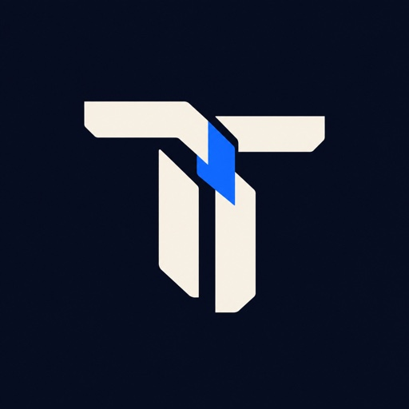

INFRASTRUCTURE01
MCP Runtime
A Kubernetes control plane for MCP servers. Deploy services, govern tool access, and audit requests inside your own cluster.

tavriclabsIndependent minds. Open source.
We build the infrastructure around agents.
So you can build what comes next.
Small, focused tools.
A bigger picture.
From the services agents run to the context they carry,
we’re building the pieces that make them work together.
01 / FROM THE LAB
Infrastructure. Workspace. Connection.
Meet the projects at the core of our ecosystem.
A Kubernetes control plane for MCP servers. Deploy services, govern tool access, and audit requests inside your own cluster.
A workspace around your coding agents. Keep session guidance, project memory, and team handoffs connected as you work.
Native client adapters for Android and Apple platforms. Bring MCP tools into your app with Kotlin and Swift.
02 / THE TOOLBOX
Build, inspect, test, and connect.
Explore the rest of our public software projects.
An opinionated implementation of the MCP spec for FastAPI.
An OAuth authorization broker with resource-server SDKs.
Black-box security assessment for live MCP servers.
A transparent proxy to inspect real MCP traffic in your terminal.
Smoke-test MCP servers with plain-English requests.
A runtime observation sidecar for MCP server fuzzing.
A credential gateway connecting mcp-auth, 1Password, and upstream tools.
03 / READ THE DOCS
Guides, references and examples for each project.
Each lives with its code, ships when the code does, and shares one design.
Deploy MCP servers, govern tool access and audit requests inside your own Kubernetes cluster.
Session guidance, project memory and team handoffs for coding agents.
A provider-neutral OAuth 2.1 broker for MCP, with Python, Go and TypeScript SDKs.
An opinionated implementation of the MCP spec for FastAPI, over Streamable HTTP and stdio.
Native Kotlin and Swift adapters around the official MCP SDKs. Preview.
Smoke-test MCP servers with plain-English requests, from your terminal or CI.
Black-box security assessment for live MCP servers: transports, safety controls and reports.
Every site here shares the same open-source theme, so the docs look and work the same wherever you land.
04 / WHY WE BUILD
Models are only part of the story. Agents need services they can use, access you can control, and context that survives the next session. That’s the work we’re here for.
Open by default.Explore the code. Shape what comes next.
Useful on their own.Focused tools with a clear job to do.
Better together.Connected by shared protocols and purpose.
THERE’S ROOM AT THE WORKBENCH.
Try a project. Open an issue. Make something better.